Início / Projetos / Imersão Azul

O oceano dentro da sala de aula.
Quantas crianças brasileiras já viram uma baleia de perto? E quantas sabem que metade do oxigênio que respiram vem do mar? O Imersão Azul nasceu para mudar essas respostas.
É uma jornada educativa completa que leva a Cultura Oceânica para dentro das escolas, alinhada à BNCC e à Década do Oceano da ONU: livros autorais, realidade virtual, plataforma digital, jornada gamificada e formação de professores, do 1º ano ao Ensino Médio.
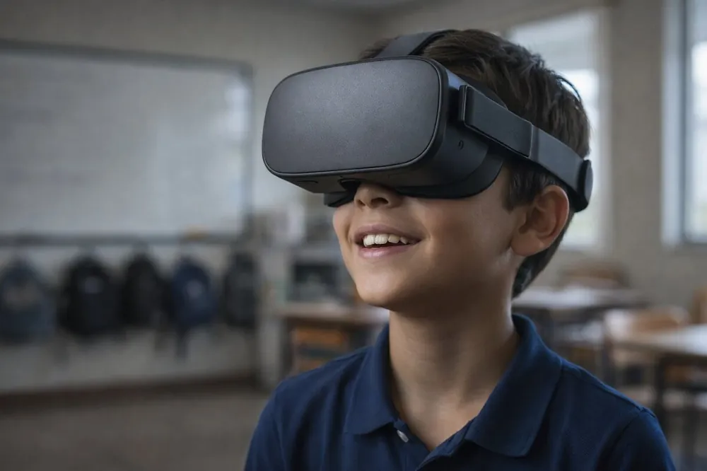
Uma coleção autoral de Cultura Oceânica, escrita a partir de experiências reais no mar e pensada para cada fase da vida escolar.
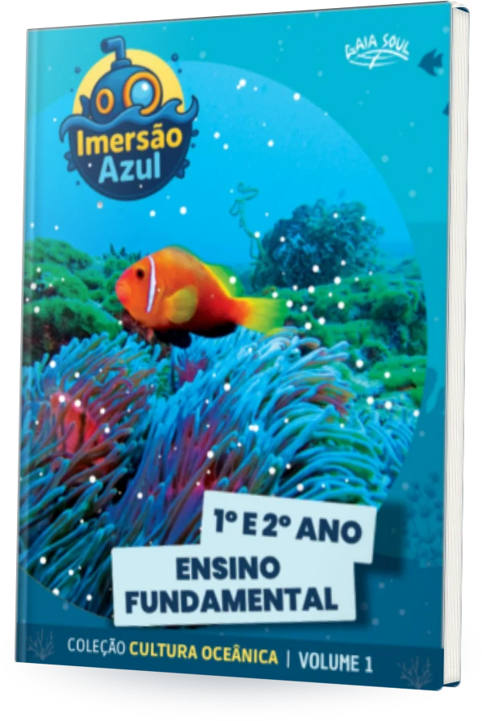
1º e 2º anoVolume 1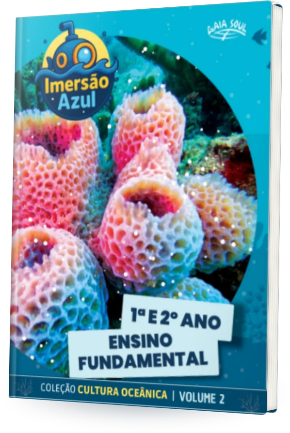
1º e 2º anoVolume 2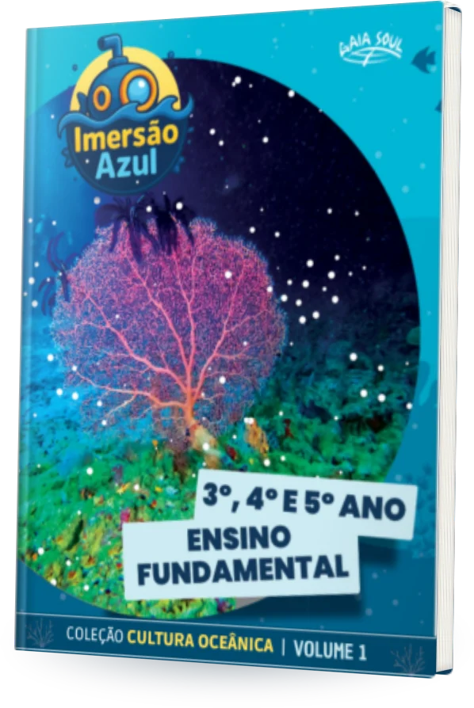
3º, 4º e 5º anoVolume 1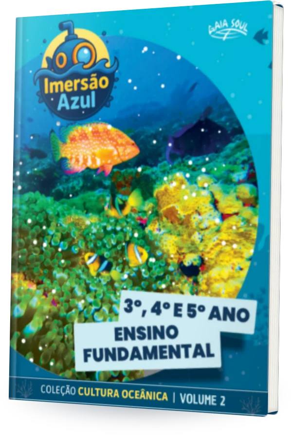
3º, 4º e 5º anoVolume 2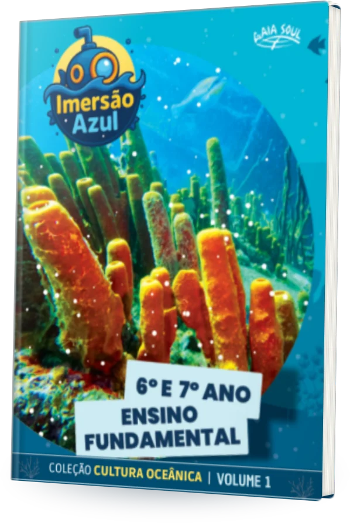
6º e 7º anoVolume 1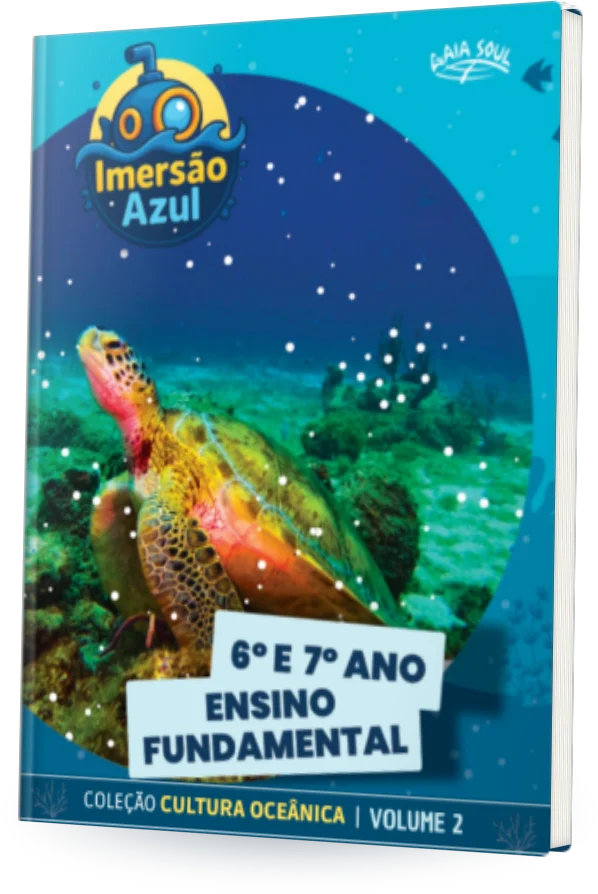
6º e 7º anoVolume 2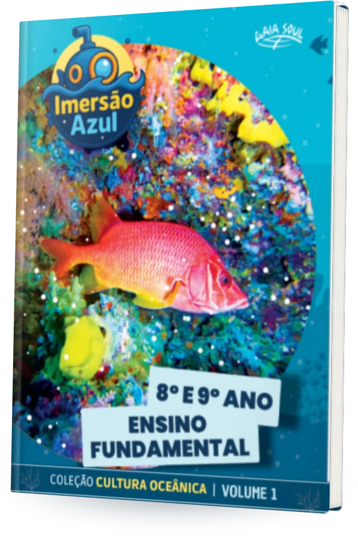
8º e 9º anoVolume 1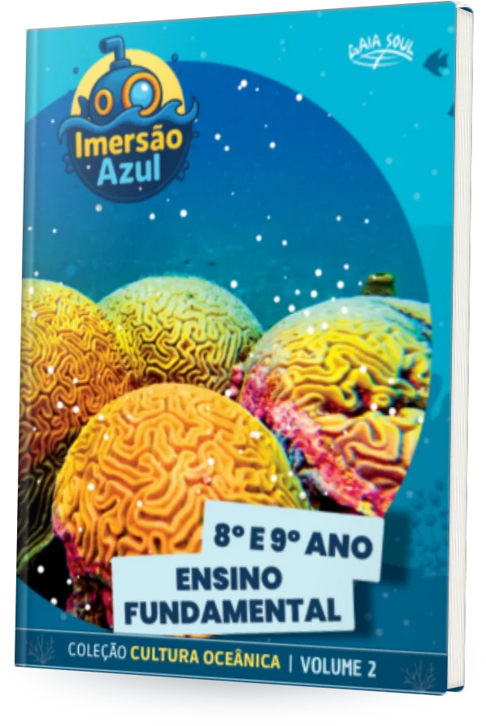
8º e 9º anoVolume 2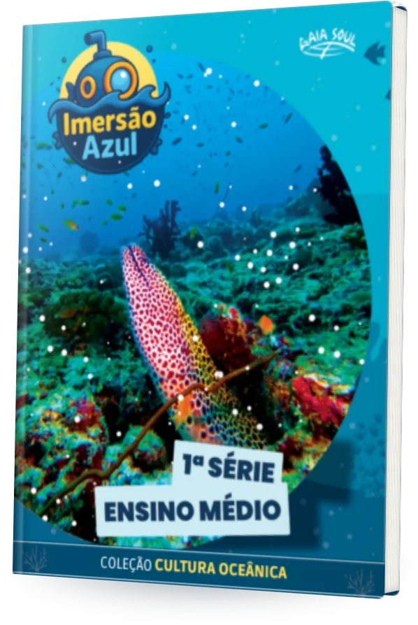
Ensino Médio1ª série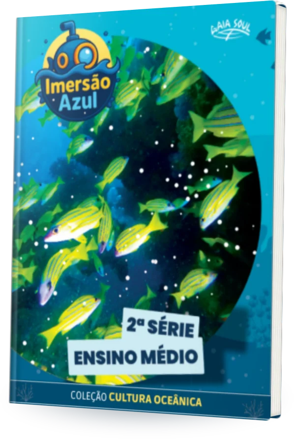
Ensino Médio2ª série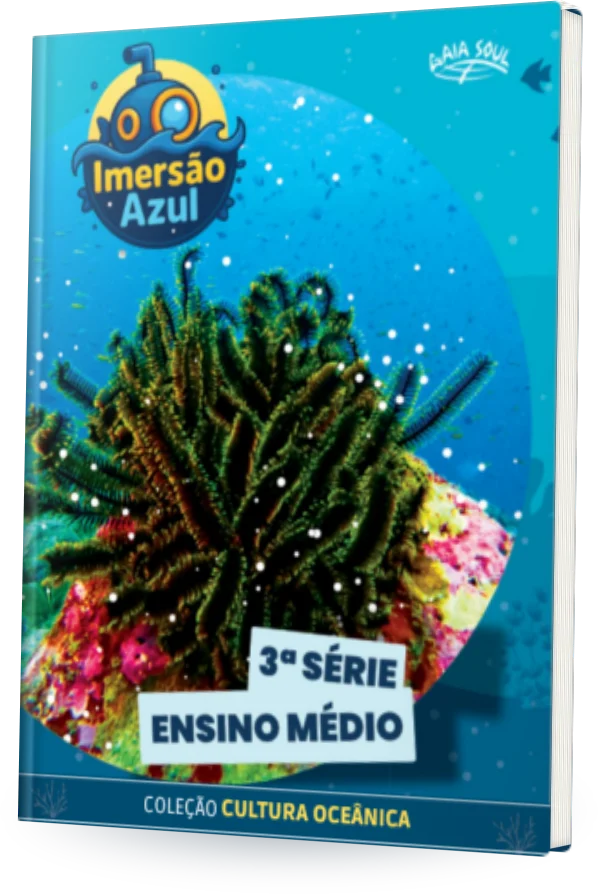
Ensino Médio3ª sérieUm ecossistema de aprendizagem que transforma ciência em curiosidade e curiosidade em cuidado.
11 volumes de Cultura Oceânica, do 1º ano ao Ensino Médio, com conteúdo que nasce de vivências reais no mar.
Com os óculos, os estudantes mergulham em recifes, nadam com tartarugas e visitam ecossistemas que só conheciam por foto.
Desafios, conteúdos digitais e conquistas que mantêm a turma engajada durante todo o ano letivo.
Educadores recebem material, apoio e certificado para levar o oceano para as suas aulas com segurança.

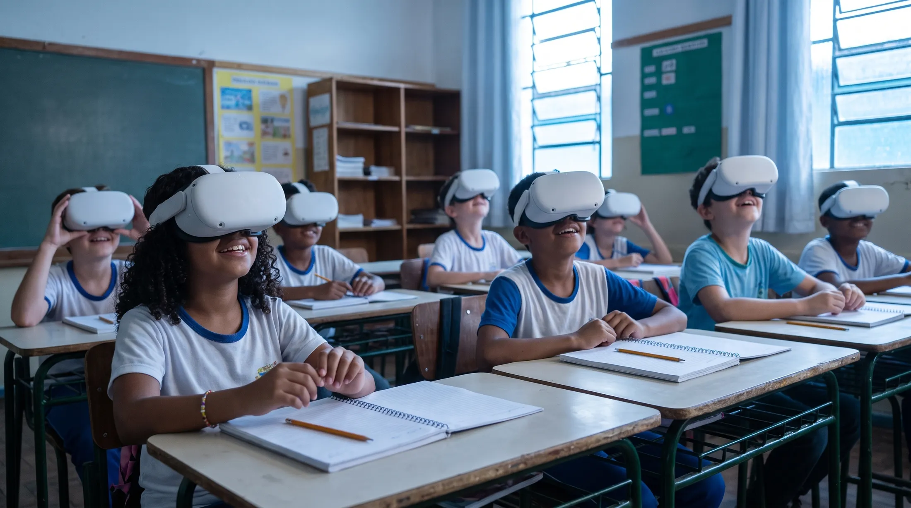
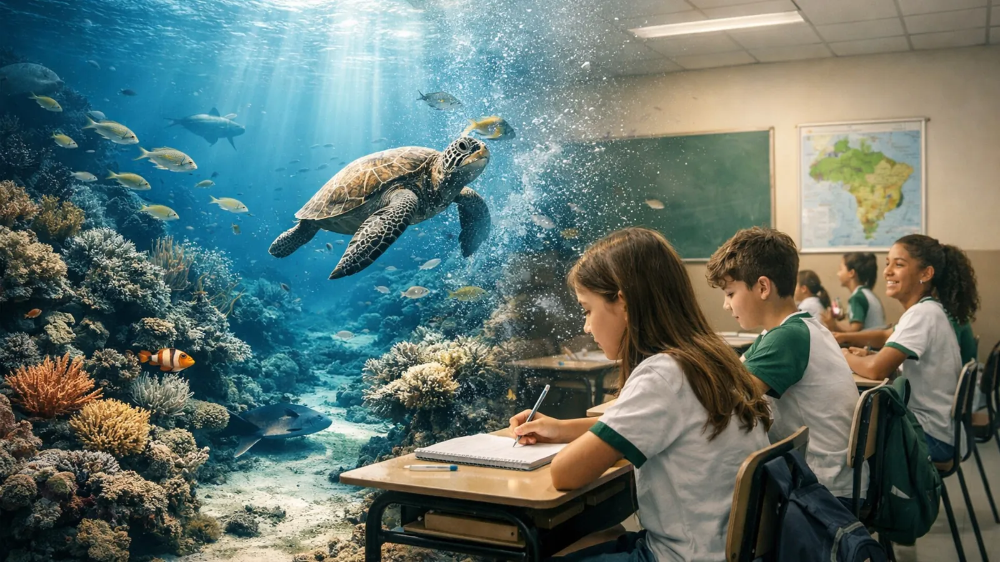
Cada pessoa que embarca leva a Cultura Oceânica mais longe: para mais escolas, mais comunidades e mais gente que nunca viu o mar de perto.